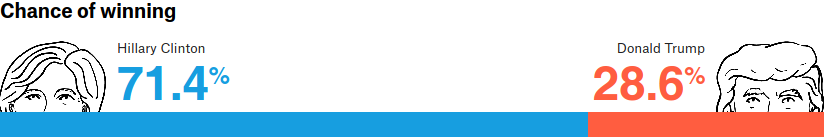

Oh! let us never, never doubt
What nobody is sure about!
The 2016 presidential election was an ignominious moment for pollsters, who overwhelmingly favored Clinton to the last, even as exit poll data belied their forecasts. Even FiveThirtyEight, one of the most generous toward Trump’s chances, gave him only 5 to 2 odds against.

Of course, probabilities are not certainties. If I assure you that a die has only a 17% chance of coming up 6 (which, if it’s fair, it does), you can’t call me a liar if you roll it once and get a 6. A presidential election is a massive, complex die roll that, for political reasons, can’t be repeated 10,000 times to generate a sampling distribution. In this light, it’s impossible to say whether FiveThirtyEight’s probabilities were accurate or not—you would have to run the election many times in parallel universes, and see whether Trump was victorious in two out of every seven of them.
We can get some sense, though, by looking at the state-level predictions. This gives us 56 data points (50 states, Washington D.C., and the five independently awarded districts of Maine and Nebraska), which we can treat, roughly, as 56 separate races. In general, if the pollsters are accurate, Clinton should win about 20% of the races which they gave her a 20% chance of winning. It may seem like Trump should sweep these races—20% is low, after all. But giving a candidate 20% rather than 0% captures something about your certainty—about how surprised you’d be if she lost. For example, FiveThirtyEight gave Clinton 0% in Alabama, but 20% in Georgia—and, indeed, Georgia saw a much closer race.1 By binning together state-level predictions, we can gauge whether more or less certainty was warranted, and visualize the results with a calibration plot (fig. 1).
Clinton win
Trump win
Gold standard
A line above the gold standard indicates underconfidence; below it, overconfidence. The error bars show 95% confidence intervals, which are fairly large toward the middle given the small sampling of states predicted to be swing states. Nonetheless, it is clear that Clinton was given overly favorable odds to win. FiveThirtyEight computes its overall probabilities by running election simulations based on weighted aggregations of third-party polls. If they had just a little less credence in Clinton, and a little more in Trump, they might have given Trump much better odds.
Here’s the same data in tabular form:
| Clinton probability | Clinton won | States/districts |
|---|---|---|
| 0–19% | 0% | AL AR ID IN KS KY LA MO MS MT ND NE NE1 NE3 OK SC SD TN TX UT WV WY |
| 20–39% | 0% | AK AZ GA IA OH |
| 40–59% | 20% | FL ME2 NC NE2 NV |
| 60–79% | 50% | CO MI NH PA |
| 80–100% | 95% | CA CT DC DE HI IL MA MD ME ME1 MN NJ NM NY OR RI VA VT WA WI |
States with probabilities below 20% or above 80% were all won by Trump and Clinton, respectively, except Wisconsin, which Clinton was given an 83.5% chance of winning, but which she ended up losing by a three-quarter-point margin. This may seem like a glaring blunder, but remember: these are probabilities. Clinton won 95% of these states, which is pretty close to the stated uncertainty. It is entirely possible that if the election were run many times, Clinton would indeed win Wisconsin 5 out of 6 times. The real trouble comes in the 0–59% range: for instance, in the five polities in which Clinton was given between a 40 and 59% chance, she won only one of the five—20%. In these areas, FiveThirtyEight was underconfident in Trump.
As mentioned above, these probabilities come from polling data. An idealized version is shown in fig. 2: given a population of 100,000 voters, in which 55% intend to vote for Clinton, you can take 10 polls of 25 people and get different results each time.
If we kept drawing perfectly random samples from this population, we would end up in the limit with a normal distribution, whose mean was the population mean. One way to predict the results of the election—itself a poll like any other—would be to randomly draw them from the area under this bell curve. This gives Clinton an 84% chance and Trump a 16% chance (actually a gross overestimate, as the voting population would be much larger than 25).
Of course, no poll can achieve a perfectly random sample. It might sample one demographic more heavily than another, fail to target voters vs. nonvoters, or simply be unlucky. For whatever reason, errors will creep in, and may shift the results of every poll one way or the other; per Nate Silver:
[P]olling errors are correlated. No matter how many polls you have in a state, it’s often the case that all or most of them miss in the same direction. Furthermore, if the polls miss in one direction in one state, they often also miss in the same direction in other states, especially if those states are similar demographically.
Technically, then, since these are not independent probabilities, fig. 1 is technically a little unfair to FiveThirtyEight.3 The errors inherent in methods of the polls they used compounded on them, and threw off their probability calculations.
So as not to pick on FiveThirtyEight too much, let’s look at what the New York Times predicted, as a calibration plot:
Clinton win
Trump win
Gold standard
and as a table:
| Clinton probability | Clinton won | States/districts |
|---|---|---|
| 0–19% | 0% | AK AL AR AZ GA ID IN KS KY LA MO MS MT ND NE NE1 NE2 NE3 OK SC SD TN TX WV WY |
| 20–39% | 0% | IA ME2 NC UT |
| 40–59% | 0% | OH |
| 60–79% | 67% | FL NH NV |
| 80–100% | 87% | CA CO CT DC DE HI IL MA MD ME ME1 MI MN NJ NM NY OR PA RI VA VT WA WI |
We see the same pattern here as with FiveThirtyEight. The Times was right on the mark in assigning probabilities to Clinton above 60%. It erred in giving her odds too generous below that mark—Clinton lost each of the thirty polities in which the Times gave her up to a 60% chance of winning, where realistically, at these levels, she should have at least snagged a few. The problem was not a failure to predict the pivots of the historically blue4 Michigan and Wisconsin, but a gross overestimate of Clinton’s chances in states like North Carolina and Utah.
The main thing communicated by probabilities is information about certainty and uncertainty. If the weather app shows a 10% chance of rain and it rains anyway, you might be irritated, but whether the app was wrong depends on how often it rains given such a forecast. If it is more than one in ten times, that’s when you might want to change apps—or start bringing an umbrella.
To wit: ↩
- ↩
# Population to sample # (0=Trump, 1=Clinton) pop = np.random.binomial( n=1, p=0.55, size=100_000) # Draw 10 samples of 25 polls = [ np.random.choice( pop, size=25, replace=False ).mean() for _ in range(10) ] It also technically double-counts the probabilities in Maine and Nebraska, in which the statewide predictions are based on the district predictions.↩
Well, since ’92↩